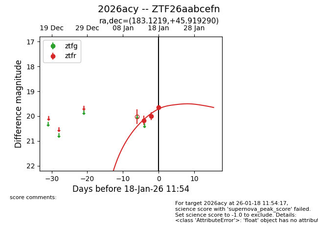
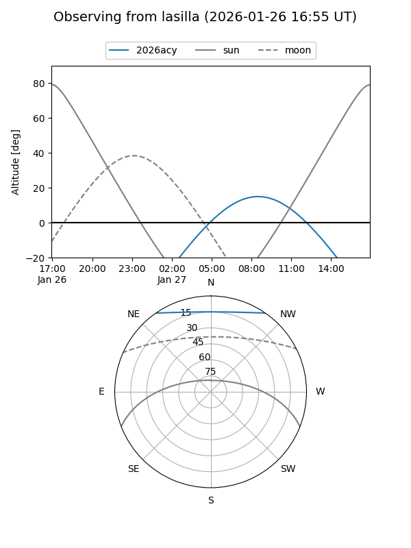
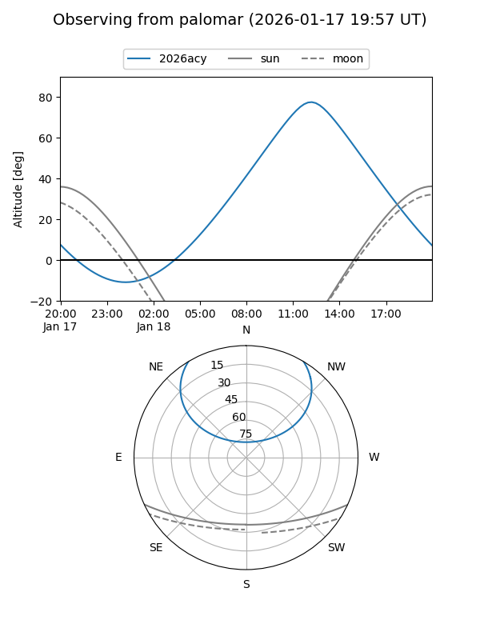
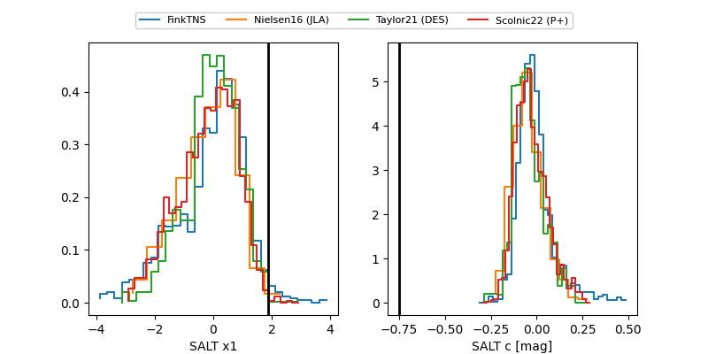

2026acy
Target 2026acy at 2026-01-20 11:46
Aliases and brokers:
FINK: link
Lasair: link
ALeRCE: link
TNS: link
YSE: link
alt names
ZTF26aabcefn (ztf,fink_ztf)
2026acy (tns,yse)
Coordinates:
equatorial (ra, dec) = 183.1219,+45.91929
equatorial (HMS+DMS) = 12:12:29.25,+45:55:09.44
galactic (l, b) = (142.7394,+69.68194)
Flags:
Photometry:
last ztfr=19.65
3 ztfr detections
Lightcurve

Visibility


Additional plots
